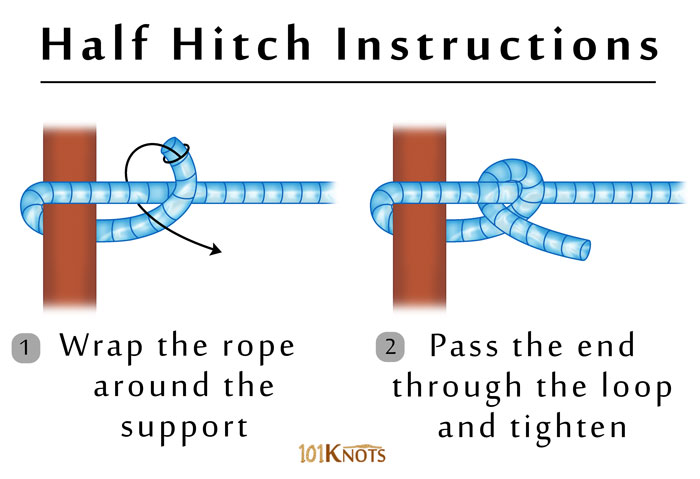

Half Hitch Knot
It is basically an overhand knot with the working end brought over and under the standing part. Though it is insecure by itself, it forms the basis of many other reliable knots. It may be used for decorative purposes as in French whipping. The quick release knot has an ancient origin and is described in The Ashley Book of Knots. The overhand and single half hitch knots have different appearances and the latter necessarily requires a support for the initial loop to be made.
